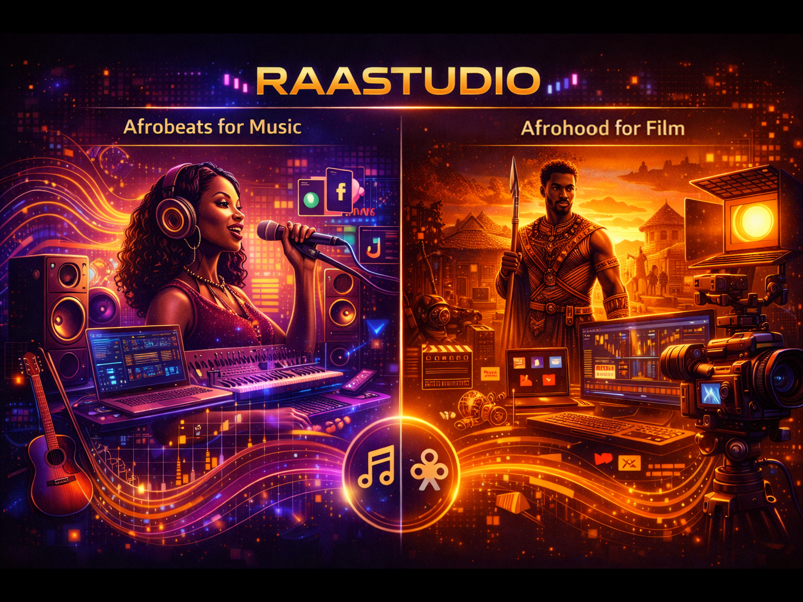
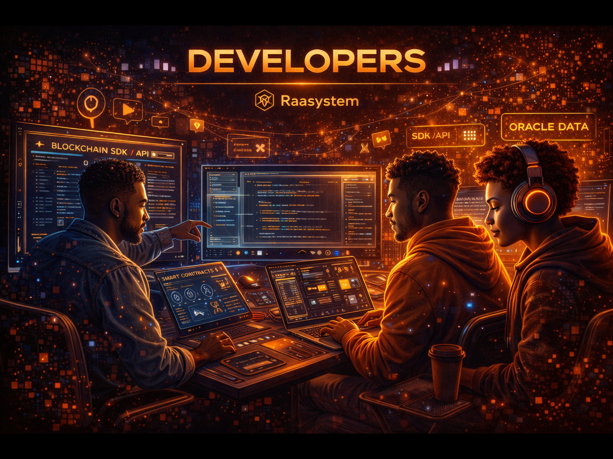
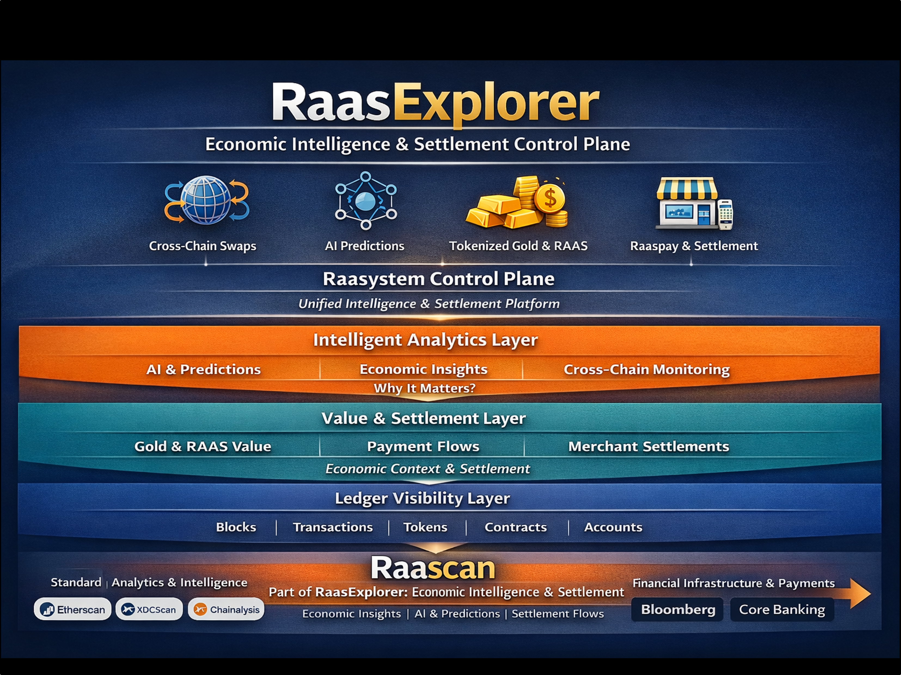
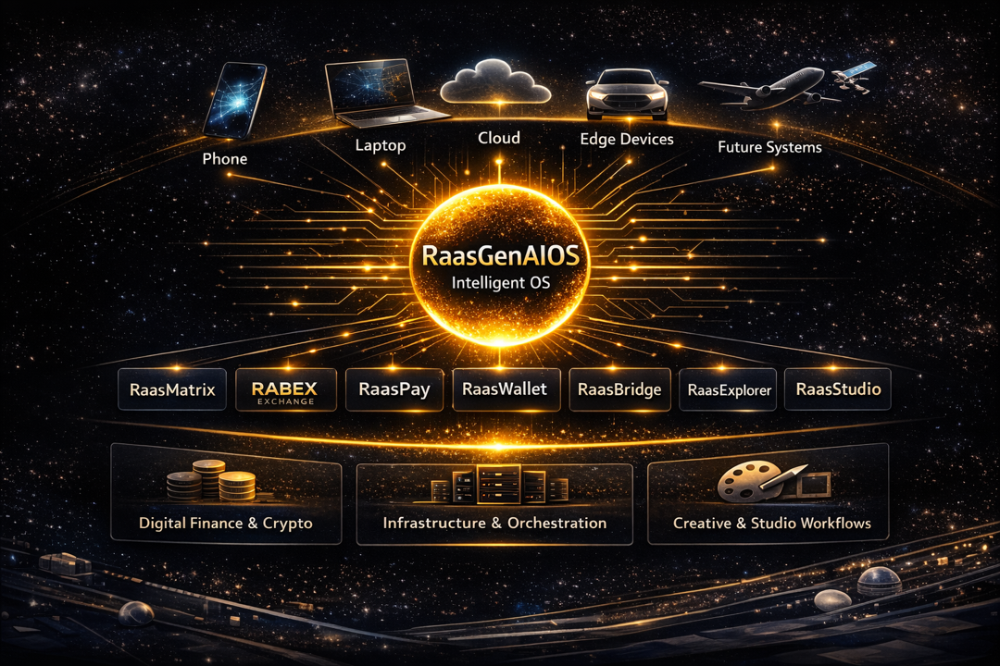
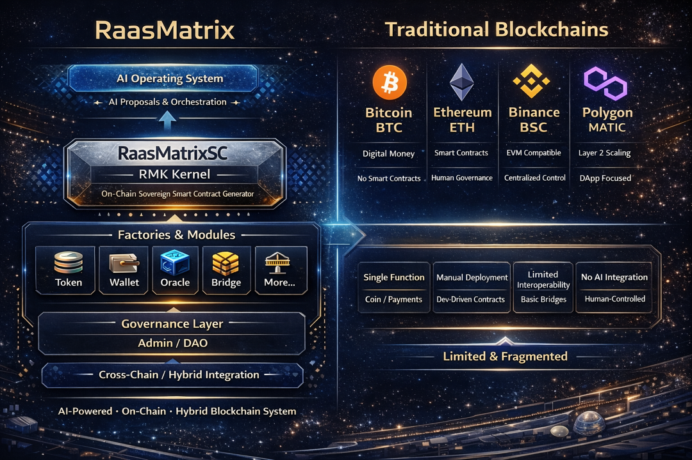
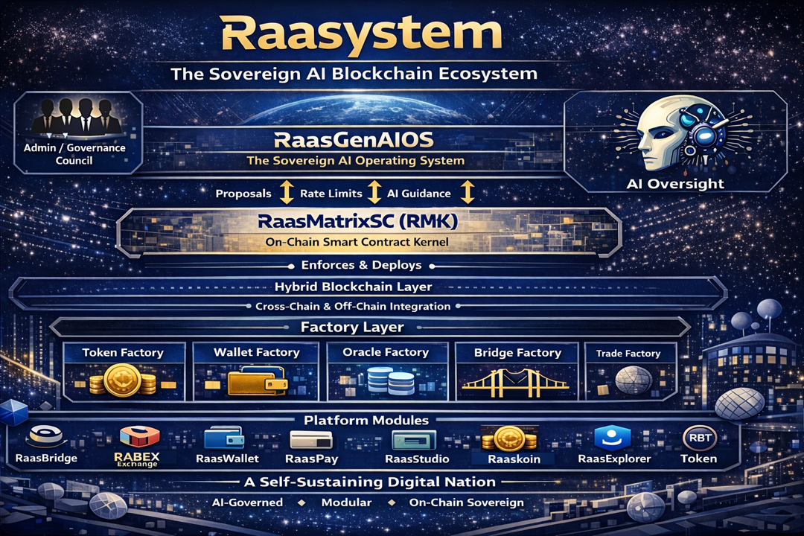
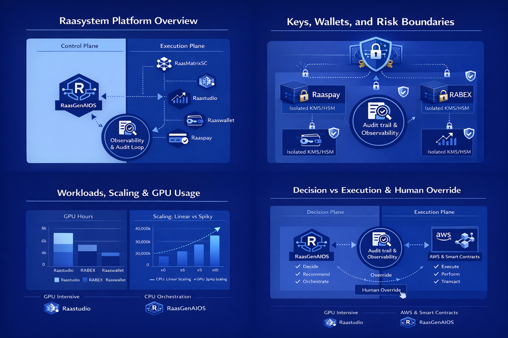
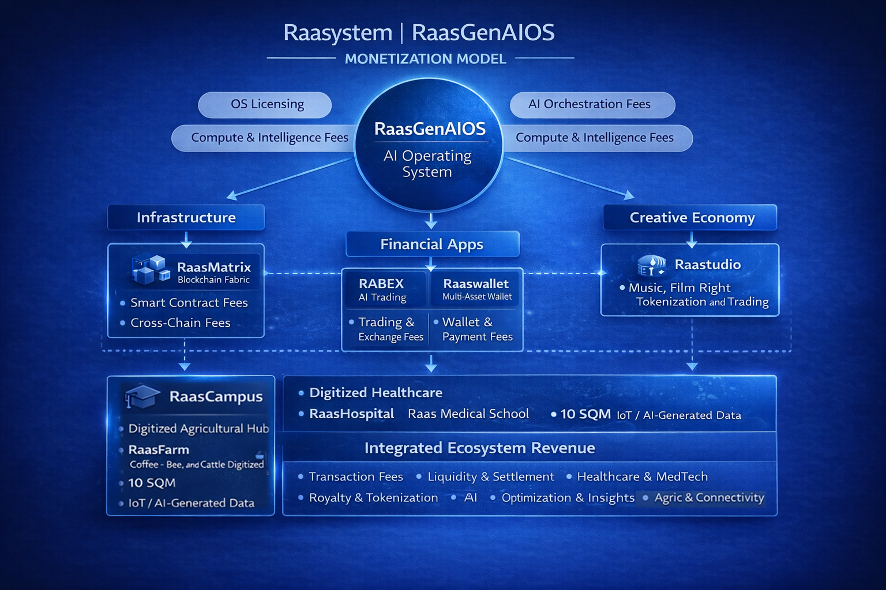

Resources Center
Explore tools, guides, and knowledge to build, learn, and master the Raasystem ecosystem.
Raastudio
Inspires creators with AI-powered music lyrics, Afrobeat ideas, and film themes — while enabling seamless distribution, global reach, and tokenized rights management to empower artists and storytellers across the AfroEntertainment ecosystem.

Developers
Tools, APIs, and smart contracts for building on a next-gen AI-driven blockchain.
Developer Center
Resources, tooling, and architecture guidance for building on Raasystem.
SDK & API
Seamless integration for applications, services, and ecosystem extensions.
Smart Contracts
Guides, examples, and deployment workflows.
Oracle Integration
Secure external data feeds and real-world connectivity.
Testnet & Sandbox
Experiment safely using testnets, simulation tools, and sandboxed environments.
Security & Auditing
Best practices, audits, and verification tools to build secure, production-ready applications.

Learn
Documentation, blogs, and FAQs — everything to navigate and master Raasystem.
Raasystem Whitepapers
Explore detailed whitepapers, onboarding guides, and essential support resources to help you get started.
Raasnomics Insights
Dive into Raasnomics, our tokenomics framework, financial models, and governance insights for the ecosystem.
Developer Resources
Access API documentation, SDKs, and technical guides to integrate and build on the Raasystem platform.
Raasystem Knowledge
Learn about ecosystem interfaces, partner networks, and tools that drive collaboration and innovation.
Community Blogs
Read articles, insights, and tutorials from the Raasystem community to stay informed on ecosystem developments.
Learning Hub
Step-by-step courses, video tutorials, and interactive guides to master Raasystem tools and platforms efficiently.
Ecosystem Interfaces
Ecosystem Interfaces form the unified interaction layer of Raasystem — led by RaasExplorer and Raascan — enabling seamless user navigation, on-chain visibility, network intelligence, and cross-platform interoperability across assets, protocols, and services.

Future Applications: Device-agnostic Intelligence
RaasGenAIOS is designed to run everywhere — from cloud to edge — delivering consistent intelligence across environments.
Mobile Phone
Edge intelligence powered by RaasGenAIOS.
Laptop
Personal and professional computing.
RaasCampus
AI-driven education, collaboration, and innovation hubs.

RaasMatrix Core Architecture
The intelligence kernel powering Raasystem — enabling modular AI, governance, and scalable integration.
RaasMatrix Kernel
The foundational execution and intelligence layer of Raasystem. RaasMatrix orchestrates logic, workflows, and decision frameworks across AI, data, and decentralized components.
RaasMatrixSG
The system governance layer that manages rules, permissions, compliance, and policy enforcement — ensuring secure, auditable, and adaptive operations across the ecosystem.
RaasGenAIOS Integration
Seamlessly integrates with RaasGenAIOS to enable autonomous agents, contextual reasoning, and real-time intelligence orchestration across applications and services.
Composable Intelligence Layer
Designed for modular deployment — RaasMatrix allows developers and enterprises to compose, extend, and customize intelligence workflows without rebuilding core infrastructure.
Enterprise & Web3 Ready
Built to bridge enterprise systems, decentralized networks, and AI-native applications — supporting scalability, interoperability, and future-ready architectures.
How RaasMatrix Compares
Unlike traditional monolithic or siloed stacks, RaasMatrix unifies AI, governance, and orchestration into a single adaptive intelligence framework.

Support Center
Find answers, submit inquiries, and stay updated with ecosystem resources.
Subscribe for Updates
Get product releases, ecosystem updates, and developer announcements.
FAQ
RaasGenAIOS — AI Operating System
What is RaasGenAIOS? +
Is RaasGenAIOS an application or a platform? +
Does RaasGenAIOS replace Android, iOS, Windows, or macOS? +
Can RaasGenAIOS run independently without another OS? +
Why is RaasGenAIOS considered a world-first? +
How does RaasGenAIOS compare to traditional and sovereign operating systems? +
| Dimension | iOS / Android / Windows | HarmonyOS | RaasGenAIOS |
|---|---|---|---|
| OS Layer | Device / Kernel | Device / Microkernel | AI Operating Layer |
| Hardware Control | Direct | Direct | Abstracted |
| App Ecosystem | Platform-locked | Vendor-locked | Ecosystem-agnostic |
| AI Role | Feature-level | Feature-level | Governing Intelligence |
| Runs Without Another OS | Yes | Yes | Yes (when desired) |
| Requires OS to Scale | Yes | Yes | No |

Core Ecosystem Components
What is RaasMatrix? +
What is RaasBridge? +
What is RaasCampus? +
What is Raastudio? +

Platform & Ecosystem
What is Rabex Hallmark? +
Why does Raasystem have many platforms? +
Why Two Tokens: Raas and RBT? +
Is RaasExplorer different from other explorers? +
What makes Raaspay different from traditional payment gateways? +
Why does Raasystem integrate with AWS, Nvidia, XDC, XRP, USDT, and ICE? +
How does Raasystem compare to Robinhood, Binance, Coinbase, Nasdaq, and NYSE? +

Access, Security & Onboarding
What is RaasWallet? +
RaasWallet is the primary gateway into Raasystem. It provides unified access to trading, payments, governance, analytics, and ecosystem services through a single secure dashboard.
How does user onboarding work? +
Users onboard through RaasWallet, which grants access to RaasBridge, trading platforms, payment services, analytics, and governance tools — all orchestrated by RaasGenAIOS.
How does Raasystem ensure security? +
Security is enforced at the AI Operating System level. RaasGenAIOS provides continuous monitoring, threat detection, policy enforcement, and deterministic execution across all ecosystem layers.
What makes Raasystem difficult to replicate? +
Raasystem combines sovereign AI governance, programmable trust, cross-chain infrastructure, and real-world asset integration into a single operating fabric — a level of systemic integration that is extremely difficult to reproduce.

RaasGenAI — Ecosystem CTO Intelligence Layer
Need More Help?
For partnerships, integrations, or ecosystem inquiries — reach out to us.
Contact Raasystem